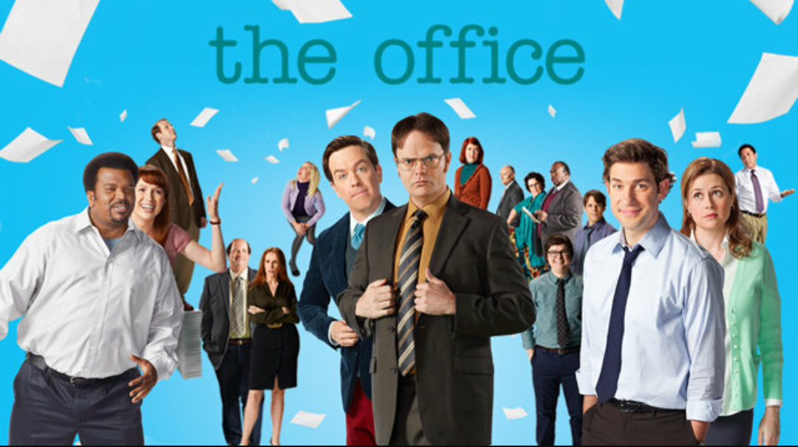

This page briefs describes the hit NBC show The Office and its main components such as the cast, plot, and some fun facts
The show essentially follows the everyday lives of all the employees at Dunder Mifflin Paper Company through a mockumentary structure. Thoughout the show, the workers experience hilarious leadership from their boss, typical fights, huge life changing events, and go through this incredible journey (personally and professionally) with everyone they work with. At they end of the day- they are all family.
The show's iconic signature is the theme song which many people adore and have recreated into different forms. The rolling images shown during the song are clips that John Krasinski, the actor who plays the main character Jim, actually took when he was checking out Scranton (the town they would film in).
Though here a few main characters, almost everyone on The Office made a lasting impact and the entire cast was subjected to praise, love, and lots of fan art depicting their characters.
Below is a RSS feed to follow the recent pop culture news and maybe you can find a show that can maybe replace the sadness you continously feel for The Office ending